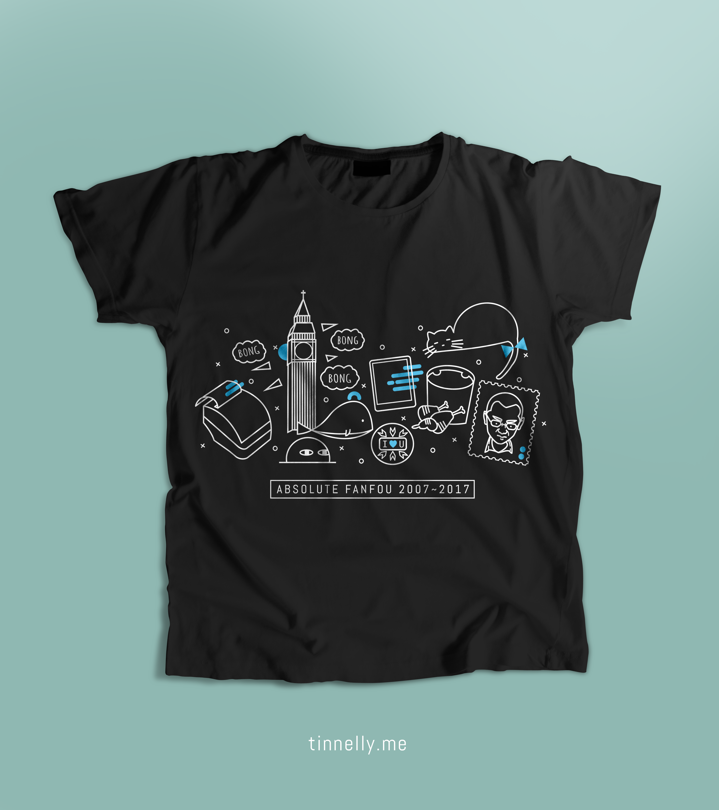
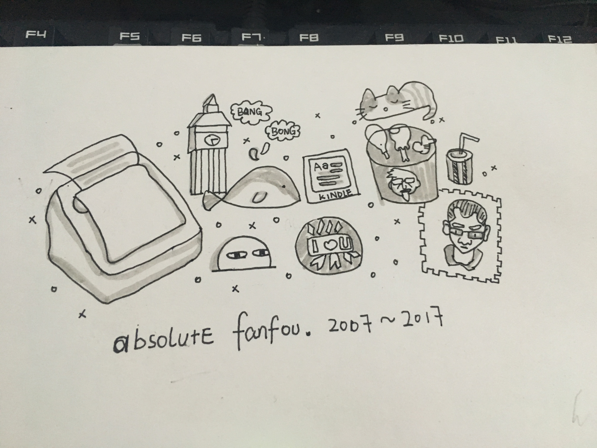

这是我设计的一件饭否十周年纪念t恤。目前正在投票众筹中，有望在纪念日看见饭友们穿着它。
想不到，连网站的寿命也已开始十年为单位了，我并不是饭否的最早的那批用户，我是2010年饭否回归时注册的，记得清楚当时在刷什么网页看见饭否的回归广告—”等你开饭”，立马就注册了。但是一直都是和主流用户插不上话的边缘用户，不仅仅是我拿着一台无法上网的电信定制机，只能通过发短信这种单方面的形式发消息，还因为对当时的我来说饭否用户的年龄都偏大，确实和他们没什么共同话题。我就写日记一样玩了好几年的单机版，期间还清过好几次fo，换过账号。渐渐的，我感觉这真是我唯一倾入情感的网站。也开始在tl上互相@版聊了。
于是看见TL上有人发设计稿的时候，我也认真的想了一想，开始就想过要不要做简洁文字版的设计。很快就否了，因为，我真的受够排版了。我这个人在生活方面很随性，但对于文字几乎有强迫症。排几个字我能搞一天。在经营位置和推敲布局方面我已经走火入魔了。这次我想设计一些图案为主，淡化文字感的。又在tl上看有人说感觉t恤包含的梗不是很多，于是我想，不如做一个包含了饭否所有梗的，并且这些梗都是用图示表现出来的。

flag已立，我就画了这张图。
有小字报、咕咕机、大本钟和小鲸鱼，有全家桶有王兴有星期五，还有饭否上的晒猫狂魔。
图一画好我并没有意识到自己是在作死，我还觉得这个形体上不够丰富，还需要更多素材。最好是能拼成一个圆形的，这样显得比较饱满。于是我还想到了解签君，还有别的诗词机器人。最好有一只用台式电脑下片的王兴。
这样的草稿投稿肯定不行，直觉上我觉得我应该用画图标的软件画，于是就下载了adobe illustrator，我并没有使用过。我想都是adobe公司出的，应该和photoshop差不多。谁知还是有很多不一样的地方，又把自己推到了学习新技能的位置。从第一步开始就不会，它的钢笔工具非常反人类，画曲线的话每一步都得先取消一下。一种拿脚趾头夹着毛笔写字的感觉。（后来才知道有非常好用的钢笔插件）开始几乎画两笔就陷入懵逼只能在在YouTube上搜相关教程，照着操作。所以开始画的非常慢，画到全家桶的时候我就几乎放弃了。因为实在太低效了。
不过Ai确实是个不错的软件，在简单的图标和简单的渲染方面，它很好用。比如它更推崇于让你通过切割把一个笼统的图案切成一个细致的图案，而不是描出来。这很像苏派素描的方式。还有路径选择非常智能和精准，不像ps要通过分图层来区别对象，画板之外也可以做图，图案生成工具非常好用等等。
为了不让自己为自己的手拙难过，我就去刷了几天的“刀剑乱舞”，做纪念衫这事就搁置再议了。后来，也是我的好友饼干和tl上的饭友催了我，我想了想，不弄完有点可惜，就接着熬了一个晚上，总算做出来的。字体选择上面也花了点时间，总算选出了一个不那么违和的字体**Abel** ，顺带这个字体也是免费的可作商用的，非常赞！Absolute Fanfou是画好草稿瞬间就想出来的名字，后来才觉得有点像“Absolute vodka”（一个伏特加品牌）
最后的效果我自己感觉完成度不是很高，因为还有很多预置角色没有画:( 而且图案的细节也可以继续打磨和推敲的。不过，大家意外的喜欢我已经非常满意了。
最后放两个youtube上关于illustrator的基础但很有帮助的教程:
一个几乎涵盖了所有的基本操作：
How to use Illustrator Stroke for Illustrations - Sacred Geometry
一个是个人比较喜欢的线条风格图标的画法：
Speed art - Christmas line icons in Adobe Illustrator (#34)